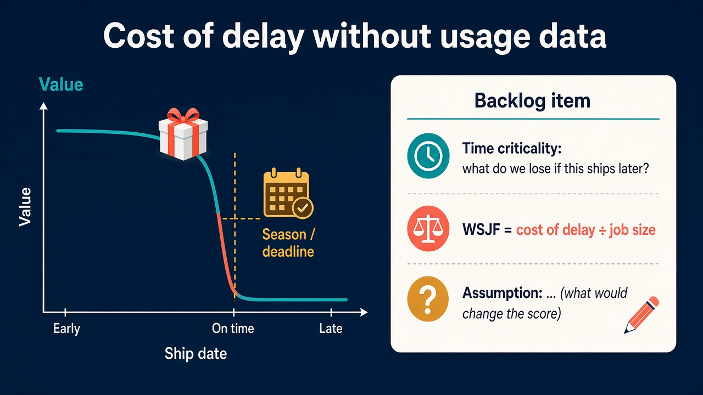

No usage data? Estimate cost of delay from time criticality and write the assumption beside the score
Source: Ipek (@ipekbuilds), with a question from Jacob (@JJacobJx)
original post · earlier WSJF post and replies
What it claims
Ipek moved her backlog from P1/P2/P3 labels to WSJF: cost of delay divided by job size. A reader asked the obvious follow-up: how do you estimate cost of delay when there is little or no usage data, for example before an MVP? Her answer is to start with time criticality, because some value has a date. A toy that misses Christmas loses its season, however good it is. So the first question is not “how many users will want this?” but “what do we lose if this ships later?” Pre-MVP she estimates from research, conversations with potential users and market timing. The reader added a habit she agreed with: keep the assumption written beside the score, so everyone can see what would change the ranking.
Why it matters for a PO
Ordering the Product Backlog is the PO’s call, and “we don’t have data yet” is the usual excuse for falling back on loudest-voice or gut ordering. Cost of delay turns the conversation into a question stakeholders can actually answer: what happens to the value if we wait a Sprint, a quarter, past the trade fair or the regulation date? Time criticality is the part you can usually estimate on day one, because dates, seasons, contract windows and competitor moves are known even when usage isn’t. Writing the assumption next to the number makes the ordering open to inspection: when new evidence arrives, you know which items to re-rank. This fills a gap in the library, which has lessons on bets and outcomes but none on how to put a number on delay.
3 takeaways
- Ask “what do we lose if this ships later?” before “how valuable is this?”. Delay cost is easier to estimate than absolute value.
- Start with time criticality: anything tied to a date, season, contract or market window has a value curve that falls off a cliff. Items without a date can usually wait.
- Put the assumption beside the score (“assumes the pilot customer signs before March”). One visible ranking with its assumptions beats parallel priority labels.
Practice this week
Take the top ten items in your Product Backlog. For each, write one sentence answering “what do we lose if this ships one quarter later?” and mark whether that loss is tied to a date (fixed date, season, contract, regulation) or not. Score time criticality 1, 3 or 8 and divide by a rough job size. Next to each score, write the single assumption that, if wrong, would move it most. Bring the list to your next refinement or stakeholder review and ask people to challenge the assumptions, not the scores.